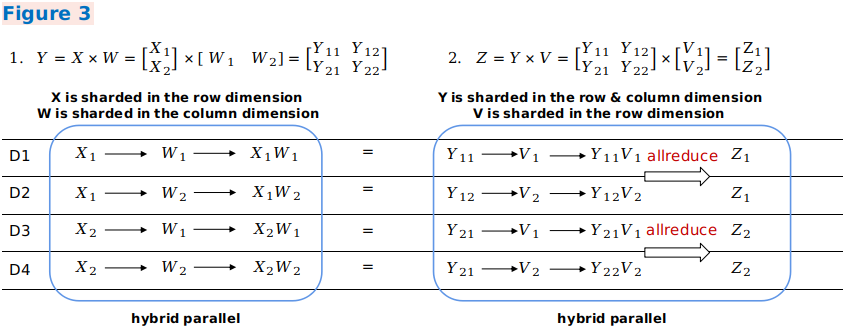

分布式并行

背景
随着深度学习的快速发展，为了提升神经网络的精度和泛化能力，数据集和参数量都在呈指数级向上攀升。分布式并行训练成为一种解决超大规模网络性能瓶颈的发展趋势。MindSpore支持了当前主流的分布式训练范式并开发了一套自动混合并行解决方案。本篇设计文档将会集中介绍几种并行训练方式的设计原理，同时指导用户进行自定义开发。
概念
集合通信
集合通信指在一组进程间通信，组内所有进程满足一定规则的发送和接收数据。MindSpore通过集合通信的方式进行并行训练过程中的数据传输工作，在Ascend芯片上它依赖于华为集合通信库HCCL完成，在GPU上它依赖于英伟达集合通信库NCCL完成。
同步模式
在同步模式下，所有的设备同时开始训练，并且当反向传播算法完成之后同步更新参数的取值。MindSpore目前采用的是同步训练模式。
数据并行
这个小节介绍了在MindSpore中ParallelMode.DATA_PARALLEL数据并行模式是如何工作的。
数据并行原理

环境依赖
每次开始进行并行训练前，通过调用
mindspore.communication.init接口初始化通信资源，并自动创建全局通信组WORLD_COMM_GROUP。数据分发（Data distribution）
数据并行的核心在于将数据集在样本维度拆分并下发到不同的卡上。在
mindspore.dataset模块提供的所有数据集加载接口中都有num_shards和shard_id两个参数，它们用于将数据集拆分为多份并循环采样的方式，采集batch大小的数据到各自的卡上，当出现数据量不足的情况时将会从头开始采样。网络构图
数据并行网络的书写方式与单机网络没有差别，这是因为在正反向传播（Forward propagation & Backward Propagation）过程中各卡的模型间是独立执行的，只是保持了相同的网络结构。唯一需要特别注意的是为了保证各卡间训练同步，相应的网络参数初始化值应当是一致的，在
DATA_PRALLEL和HYBRID_PARALLEL模式下建议通过使能parameter_broadcast达到权重广播的目的；在AUTO_PRALLEL和SEMI_AUTO_PARALLEL模式下，框架内部会自动分析参数的并行度，并设置相应的随机数种子，保证在数据并行维度的设备上参数初始化值一致。梯度聚合（Gradient aggregation）
数据并行理论上应该实现和单机一致的训练效果，为了保证计算逻辑的一致性，在梯度计算完成后插入
AllReduce算子实现各卡间的梯度聚合操作。MindSpore设置了mean开关，用户可以选择是否要对求和后的梯度值进行求平均操作，也可以将其视为超参项，打开开关等价于学习率倍数缩小。参数更新（Parameter update）
因为引入了梯度聚合操作，所以各卡的模型会以相同的梯度值一起进入参数更新步骤。因此MindSpore实现的是一种同步数据并行训练方式。理论上最终每卡训练出来的模型是相同的，如果网络中含有在样本维度的归约类型操作，网络的输出可能会有所差别，这是由数据并行的切分性质决定的。
数据并行代码
集合通信
management.py：这个文件中涵盖了集合通信过程中常用的
helper函数接口，例如获取集群数量和卡的序号等。当在Ascend芯片上执行时，框架会加载环境上的libhccl.so库文件，通过它来完成从Python层到底层的通信接口调用。comm_ops.py：MindSpore将支持的集合通信操作都封装为算子的形式放在这个文件下，包括
AllReduce、AllGather、ReduceScatter和Broadcast等。PrimitiveWithInfer中除了定义算子所需属性外，还包括构图过程中输入到输出的shape和dtype推导。
梯度聚合
grad_reducer.py：这个文件实现了梯度聚合的过程。对入参
grads用HyperMap展开后插入AllReduce算子，这里采用的是全局通信组，用户也可以根据自己网络的需求仿照这个模块进行自定义开发。MindSpore中单机和分布式执行共用一套网络封装接口，在Cell内部通过ParallelMode来区分是否要对梯度做聚合操作，网络封装接口建议参考TrainOneStepCell代码实现。
自动并行
自动并行作为MindSpore的关键特性，用于实现自动的数据并行加模型并行的混合并行训练方式，旨在帮助用户以单机的脚本表达并行算法逻辑，降低分布式训练难度，提高算法研发效率，同时又能保持训练的高性能。这个小节介绍了在MindSpore中ParallelMode.AUTO_PARALLEL自动并行模式及ParallelMode.SEMI_AUTO_PARALLEL半自动并行模式是如何工作的。
自动并行原理

分布式算子和张量排布模型
在上面的架构图中，自动并行流程会对单机的正向计算图（ANF Graph）进行遍历，以分布式算子（Distributed Operator）为单位对张量进行切分建模，表示一个算子的输入输出张量如何分布到集群各个卡上（Tensor Layout）。这种模型充分地表达了张量和设备间的映射关系，用户无需感知模型各切片放到哪个设备上运行，框架会自动调度分配。
为了得到张量的排布模型，每个算子都具有切分策略（Shard Strategy），它表示算子的各个输入在相应维度的切分情况。通常情况下只要满足以2为基、均匀分配的原则，张量的任意维度均可切分。以下图为例，这是一个三维矩阵乘（BatchMatMul）操作，它的切分策略由两个元组构成，分别表示
input和weight的切分形式。其中元组中的元素与张量维度一一对应，2^N为切分份数，1表示不切。当用户想表示一个数据并行切分策略时，即input的batch维度切分，其他维度不切，可以表达为strategy=((2^N, 1, 1),(1, 1, 1))；当表示一个模型并行切分策略时，即weight的非batch维度切分，这里以channel维度切分为例，其他维度不切，可以表达为strategy=((1, 1, 1),(1, 1, 2^N))；当表示一个混合并行切分策略时，其中一种切分策略为strategy=((2^N, 1, 1),(1, 1, 2^N))。
依据切分策略，分布式算子中定义了推导算子输入张量和输出张量的排布模型的方法。这个排布模型由
device_matrix，tensor_shape和tensor map组成，分别表示设备矩阵形状、张量形状、设备和张量维度间的映射关系。分布式算子会进一步根据张量排布模型判断是否要在图中插入额外的计算、通信操作，以保证算子运算逻辑正确。张量排布变换
当前一个算子的输出张量模型和后一个算子的输入张量模型不一致时，就需要引入计算、通信操作的方式实现张量排布间的变化。自动并行流程引入了张量重排布算法（Tensor Redistribution），可以推导得到任意排布的张量间通信转换方式。下面三个样例表示公式
Z=(X×W)×V的并行计算过程， 即两个二维矩阵乘操作，体现了不同并行方式间如何转换。 在样例一中，第一个数据并行矩阵乘的输出在行方向上存在切分，而第二个模型并行矩阵乘的输入需要全量张量，框架将会自动插入AllGather算子实现排布变换。
在样例二中，第一个模型并行矩阵乘的输出在列方向上存在切分，而第二个数据并行矩阵乘的输入在行方向上存在切分，框架将会自动插入等价于集合通信中
AlltoAll操作的通信算子实现排布变换。
在样例三中，第一个混合并行矩阵乘的输出切分方式和第二个混合并行矩阵乘的输入切分方式一致，所以不需要引入重排布变换。但由于第二个矩阵乘操作中，两个输入的相关维度存在切分，所以需要插入
AllReduce算子保证运算正确性。
综上，1、2两点是自动并行实现的基础，总体来说这种分布式表达打破了数据并行和模型并行的边界，轻松实现混合并行。从脚本层面上，用户仅需构造单机网络，即可表达并行算法逻辑，框架将自动实现对整图切分。
切分策略搜索算法
当用户熟悉了算子的切分表达，并手动对算子配置切分策略，这就是
SEMI_AUTO_PARALLEL半自动并行模式。这种方式对手动调优有帮助，但还是具有一定的调试难度，用户需要掌握并行原理，并根据网络结构、集群拓扑等计算分析得到高性能的并行方案。为了帮助用户加速并行网络训练过程，在半自动并行模式的基础上，AUTO_PARALLEL自动并行模式支持并行策略传播（Sharding Propagation），能够有效地降低用户手配算子切分策略的工作量，算法将切分策略由用户配置的算子向未配置的算子传播。为进一步降低用户手配算子切分策略的工作量，支持切分策略完全自动搜索。为此，围绕硬件平台构建相应的代价函数模型（Cost Model），计算出一定数据量、一定算子在不同切分策略下的计算开销（Computation Cost），内存开销（Memory Cost）及通信开销（Communication Cost）。然后通过动态规划算法（Dynamic Programming）或者递归规划算法（Recursive Programming），以单卡的内存上限为约束条件，高效地搜索出性能较优的切分策略。策略搜索这一步骤代替了用户手动指定模型切分，在短时间内可以得到较高性能的切分方案，极大降低了并行训练的使用门槛。
分布式自动微分
传统的手动模型切分除了需要关注正向网络通信还需要考虑网络反向的并行运算，MindSpore通过将通信操作包装为算子，并利用框架原有的自动微分操作自动生成通信算子反向，所以即便在进行分布式训练时，用户同样只需关注网络的前向传播，真正实现训练的全自动并行。
自动并行代码
张量排布模型
tensor_layout：这个目录下包含了张量排布模型相关功能的定义及实现。其中
tensor_layout.h中声明了一个张量排布模型需要具备的成员变量tensor_map_origin_，tensor_shape_和device_arrangement_等。在tensor_redistribution.h中声明了实现张量排布间from_origin_和to_origin_变换的相关方法，将推导得到的重排布操作保存在operator_list_中返回，并计算得到重排布所需的通信开销comm_cost_, 内存开销memory_cost_及计算开销computation_cost_。
分布式算子
ops_info：这个目录下包含了分布式算子的具体实现。在
operator_info.h中定义了分布式算子实现的基类OperatorInfo，开发一个分布式算子需要继承于这个基类并显式实现相关的虚函数。其中InferTensorInfo，InferTensorMap和InferDevMatrixShape函数定义了推导该算子输入、输出张量排布模型的算法。InferForwardCommunication，InferMirrorOps等函数定义了切分该算子需要插入的额外计算、通信操作。CheckStrategy和GenerateStrategies函数定义了算子切分策略校验和生成。根据切分策略SetCostUnderStrategy将会产生该策略下分布式算子的并行开销值operator_cost_。
策略搜索算法
auto_parallel：这个目录下实现了切分策略搜索的算法。
graph_costmodel.h定义了构图信息，其中每个点表示一个算子OperatorInfo，有向边edge_costmodel.h表示算子的输入输出关系及重排布的代价。operator_costmodel.h中定义了每个算子的代价模型，包括计算代价、通信代价和内存代价。dp_algorithm_costmodel.h主要描述了动态规划算法的主要流程，由一系列图操作组成。在costmodel.h中定义了cost和图操作的数据结构。
设备管理
device_manager.h：这个文件实现了集群设备通信组的创建及管理。其中设备矩阵模型由
device_matrix.h定义，通信域由group_manager.h管理。
整图切分
step_auto_parallel.h, step_parallel.h：这两个文件包含了自动并行流程的核心实现。首先由
step_auto_parallel.h调用策略搜索流程并产生分布式算子的OperatorInfo，然后在step_parallel.h中处理算子切分和张量重排布等流程，对单机计算图进行分布式改造。
通信算子反向
grad_comm_ops.py：这个文件定义了
AllReduce和AllGather等通信算子的反向操作。
分布式并行高级特性
随着深度学习的发展，模型规模越来越大。如NLP领域，短短几年时间，参数量就从BERT的亿级，发展到GPT-3的1700亿，再到盘古alpha 2000亿，以及当前业界甚至提出百万亿级。由此可以看出，近年来参数规模呈指数增长趋势。另一方面，随着大数据、互联网等领域相关技术的发展，可供模型训练的数据集也极速扩增，例如推荐、自然语言处理等场景的数据集可达数TB。
面对大数据量、大规模参数的训练，单个设备要么完成模型训练的时间很长，要么因显存不足而导致无法进行训练。因此，需要引入分布式训练技术。
当前，最常用的分布式训练技术是数据并行。数据并行将训练数据切分到多个设备上，每个设备维护相同的模型参数和相同大小的计算任务，但是处理不同的数据，并在反向传播过程中，对每个设备产生的参数梯度进行全局AllReduce同步求和。当数据集较大而模型较小时，选择数据并行较有优势，如ResNet50。但是，当模型规模较大、或数据集与模型规模均较大时，就需要借助于其他分布式特性。
MindSpore提供以下高级特性来支撑大模型分布式训练，用户可以根据自己的需要进行灵活组合。
算子级并行
算子级并行是以算子为单位，对其输入张量切分到多个设备，从而将算子进行分布式计算。一方面，可以将数据样本及模型参数同时切分到多个设备上，以完成大模型的训练。另一方面，可以充分利用集群资源进行并行计算，以提高整体速度。
用户可以设置正向网络中每个算子的切分策略，框架根据算子的切分策略对每个算子及其输入张量进行切分建模，使得该算子的计算逻辑在切分前后保持数学等价。
流水线并行
当集群设备数很多时，如果仅采用算子级并行的方式，则需要在整个集群的通信域上进行通信，这可能使得通信效率低，从而降低整体性能。
而流水线并行能将神经网络结构切分成多个stage，每个stage跑在一部分设备内，将集合通信的通信域限定在这部分设备范围内，而stage间采用点对点通信。
流水线并行的优点在于：能提升通信效率、能方便的处理按层堆叠的神经网络结构。缺点在于：同一时刻内，有些节点可能处于空闲状态。
优化器并行
在数据并行或算子级并行训练时，模型的参数可能在多个设备上存在同一份副本。这使得优化器在更新该权重之时，在多个设备间存在冗余计算。在此情况下，可以通过优化器并行将优化器的计算量分散到多个设备上。它的优点在于：能减少静态内存消耗、减少优化器内的计算量。缺点在于：增加了通信开销。
Host&Device异构
在大模型训练时，因每个设备（加速器）的内存容量有限，从而总体所能训练的模型规模将受设备数的限制。为了能完成更大规模的模型训练，可以使用主机端（Host）和加速器（Device）异构的训练模式。它同时发挥了主机端内存大和加速器端计算快的优势，是超大模型训练过程中减少设备数的有效方式。
重计算
MindSpore根据正向图计算流程来自动推导出反向图，正向图和反向图一起构成了完整的计算图。在计算某些反向算子时，可能需要用到某些正向算子的计算结果，导致这些正向算子的计算结果，需要驻留在内存中直到这些反向算子计算完，它们所占的内存才会被其他算子复用。而这些正向算子的计算结果，长时间驻留在内存中，会推高计算的内存占用峰值，在大规模网络模型中尤为显著。为了降低内存峰值，重计算技术可以不保存正向激活层的计算结果，让该内存可以被复用，然后在计算反向部分时，重新计算出正向激活层的结果。
切分策略传播
在算子级并行中，需要用户配置正向网络中每个算子的切分策略（若不配置，则默认使用数据并行的策略）。而切分策略传播特性可以仅配置若干个算子的切分策略，为未配置切分策略的算子自动生成可行的切分策略，并且达到最小化通信开销的效果。
Parameter Server模式
Parameter Server(参数服务器)是分布式训练中一种广泛使用的架构，相较于数据并行同步的AllReduce训练方法，Parameter Server具有更好的灵活性、可扩展性以及节点容灾的能力。参数服务器既支持同步SGD(Stochastic Gradient Descent，随机梯度下降)，也支持异步SGD的训练算法。在扩展性上，将模型的计算与模型的更新分别部署在Worker和Server两类进程中，使得Worker和Server的资源可以独立地横向扩缩(新增或者删除Worker和Server资源)。另外，在大规模数据中心的环境下，计算设备、网络以及存储经常会出现各种故障而导致部分节点异常，而在参数服务器的架构下，能够较为容易地处理此类故障而不会对训练中的任务产生影响。
通信算子融合
在分布式训练场景下，跨设备甚至跨节点的数据传输是制约扩展性以及算力利用率的瓶颈。通信算子融合是一种提升网络资源利用率、加速数据传输效率的重要方法，其将相同源节点和目的节点的通信算子打包同时执行，以避免多个单算子执行带来的额外开销。
数据集切分
在进行分布式训练时，需要将训练数据集导入到每个设备上。常见的导入方式有两种：1）以数据并行的方式导入，即将数据按batch维度进行切分，每个设备导入一部分。2）每个设备导入全量的数据。另外，当数据的某些维度特别大时（如遥感图片的H/W维可能特别大），即使样本数很少，也需要对图片进行切分，即将数据按H/W维度进行切分，每张设备读取一部分图片。此特性能支持将数据集按特定维度切分，以满足大幅面图片处理领域的训练诉求。
分布式推理
对于大模型来说，训练好的参数巨大，如盘古alpha拥有2000亿参数。如此庞大的模型在推理时，无法简单地部署在单个设备上，推理时需要把模型切分到集群中。并且，推理和训练可能不在同一个环境中，所使用的集群大小可能不一样。因此，还需支持推理设备数与训练设备数不一致的场景。
函数式算子切分
在动态图模式下，指定网络结构中的某个部分以图模式执行，并进行各种并行操作。
特性相关接口说明
特性类别 |
特性接口 |
说明 |
作用 |
|---|---|---|---|
算子级并行 |
shard(in_strategy=None, out_strategy=None) |
设置算子的输入及输出张量的切分策略（其中，输出张量的切分策略仅支持部分算子，如Gather、MatMul） |
通过将网络模型中每个算子涉及到的张量进行切分，降低单个设备的内存容量，以完成大模型训练/推理。或利用集群资源，进行分布式计算，减少整体执行时间。 |
add_prim_attr(name, value) |
Gather算子： |
在推荐领域，存在数据集的每一列对应一个子表的场景。在该场景下，使用此配置能降低通信量，提升整体性能。 |
|
EmbeddingLookUp算子： |
在推荐领域，存在Embedding Table特别大的场景，为了节约device内存，可以使用此配置将EmbeddingLookUp放到CPU上执行，以完成推荐大模型的训练。 |
||
set_auto_parallel_context(enable_alltoall=bool_value) |
表示在通信时是否允许产生AllToAll通信算子，其值为bool类型，默认为False。 |
AllToAll通信能减少通信数据量，提高通信效率，但需要环境支持。 |
|
流水线并行 |
set_auto_parallel_context(pipeline_stages=stage_num) |
设置流水线并行的stage个数，其值为正整数，取值范围为[1, 设备数]。 |
指定stage的个数，将集合通信的通信域限定在stage范围内，而stage间采用点对点通信。 |
pipeline_stage(value) |
设置该Cell在哪个stage中执行。 |
设置该Cell在哪个stage中执行。 |
|
PipelineCell(network, micro_size) |
用于指定训练网络的MicroSize数量，其中network为待训练的网络，micro_size为正整数。 |
指定micro_size，能减少stage间的空闲等待时间，提升流水线并行的整体效率。 |
|
优化器并行 |
set_auto_parallel_context(enable_parallel_optimizer=bool_value) |
表示是否开启优化器并行，其值为bool型，默认为False。 |
优化器并行能节省静态内存的开销，但增加了通信开销。 |
set_auto_parallel_context(parallel_optimizer_config=config) |
只有开启优化器并行后，此配置才生效。其中config是个dict，支持两个键值： |
gradient_accumulation_shard为True时，将节省一份参数大小的静态内存，但增加了通信开销。 |
|
重计算 |
recompute(mode=True) |
用于指定该算子是否需要重计算，其值为bool类型，默认为True，表示开启算子重计算。 |
开启算子重计算后，能减少动态内存的峰值，但增加整体计算量。 |
recompute(**kwargs) |
调用此接口后，将会对此Cell中的算子进行重计算。 |
开启Cell重计算，且能配置模型并行的通信算子、优化器并行的通信算子是否进行重计算。当通信算子重计算时，将消耗通信资源，但能降低动态内存的峰值。 |
|
自动并行 |
set_auto_parallel_context(search_mode=mode) |
用于指定策略搜索算法，其值为字符串类型，可选值为： |
自动并行可以让用户不配置或者少量配置算子的切分策略，而由框架搜索出切分策略。 |
set_algo_parameters(fully_use_devices=bool_value) |
用于设置搜索策略时是否需要将算子切分到所有设备上。其值为bool类型，默认为True。 |
如果将算子切分到所有设备上，则能缩小搜索空间，提高搜索速度，但搜索出来的策略并非全局最优。 |
|
set_auto_parallel_context(all_reduce_fusion_config=config) |
配置梯度AllReduce算子融合策略，其值为list类型。例如：[20, 35]，表示将前20个AllReduce融合成1个，第20～35个AllReduce融合成1个，剩下的AllReduce融合成1个。 |
减少AllReduce通信算子的操作次数，提高通信效率。 |
|
通信算子融合 |
set_auto_parallel_context(comm_fusion=config) |
设置通信算子的融合配置，当前支持AllReduce、AllGather、ReduceScatter通信算子的配置。其值为dict类型，如comm_fusion={“allreduce”: {“mode”: “auto”, “config”: None}}。其中”mode”有三种选项： |
减少AllReduce/AllGather/ReduceScatter通信算子的操作次数，提高通信效率 |
数据集切分 |
set_auto_parallel_context(dataset_strategy=config) |
配置数据集的切分策略。其中，config为Union[str, tuple]。 |
当样本数比卡数少时，可以采用”full_batch”的方式进行导入；当样本数大、模型参数小时，可以采用”data_parallel”的方式导入；当数据集是高分辨率图像数据时，可以采用配置tuple切分策略的方式导入。 |
分布式推理 |
infer_predict_layout(*predict_data) |
使用推理数据进行一次预编译，输出算子的切分信息。 |
获取推理时所有权重的切分信息。 |
load_distributed_checkpoint(network, checkpoint_filenames, predict_strategy=None, train_strategy_filename=None) |
加载分布式权重，需每台机器预先放置全量的ckpt。 |
加载分布式权重，以进行分布式推理。 |
|
函数式算子切分 |
shard(in_strategy, out_strategy, device=”Ascend”, level=0) |
设置cell的输入及输出张量的切分策略，其余算子的并行策略由切分策略传播得到。 in_strategy/out_strategy指定输入/输出张量的切分策略，device指定执行设备，level指定切分策略传播算法的模式。 |
在PyNative模式下指定某个cell实例以图模式执行，并且依据指定的输入输出切分策略进行算子级别的模型并行， 其余的部分仍以PyNative模式执行数据并行。 |
ops.shard(fn, in_strategy, out_strategy, device=”Ascend”, level=0) |
传入的fn为cell实例或函数，其余输入和shard相同，返回值为函数，再调用此函数时，会以图模式执行算子级别的模型并行 |
此用法可以指定某个函数进行算子级别的模型并行，具体功能和cell的shard方法相同。 |